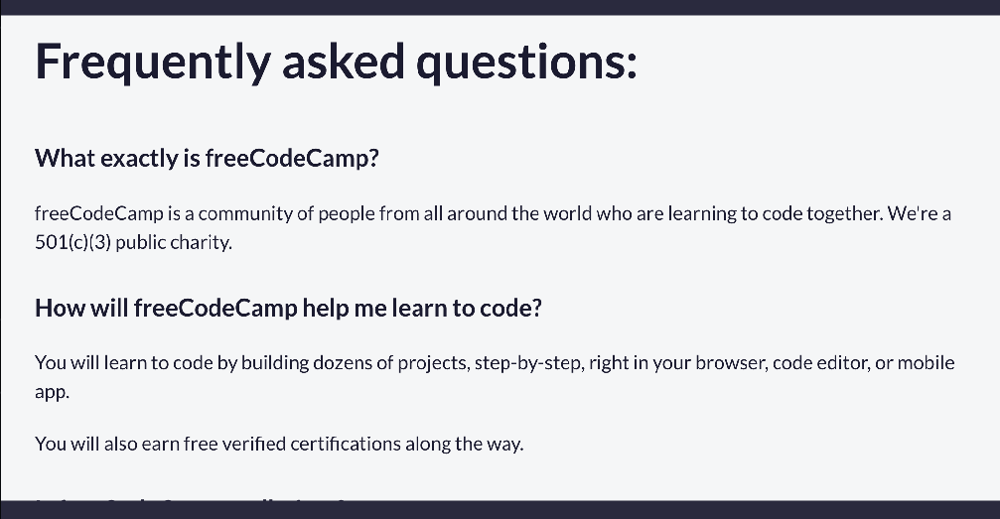

User Interface Design Fundamentals
In theses lectures, you will learn about the fundamentals of user interface (UI) design. You will learn about the terms you need to know to communicate with designers, visual hierarchy, scaling, alignment, whitespace, and much more.
What are common design terms to help you communicate with designers.
As a developer, you may need to work closely with designers. If you understand basic design terminology, you'll have a shared vocabulary and you'll be able to participate in the design process more actively. This can make your workflow more efficient and result in a better user experience.
So let's dive in. We'll start with the term layout. Layout is how the visual elements are arranged on a page or screen to communicate a message. These elements may include text, images, and white space. The layout is like the blueprint of a design. Designers must consider the placement, size, and hierarchy of each element.
The term that is closely related to layout is alignment. Alignment is how the elements are placed in relation to one another. Using alignment correctly is helpful for making the design look clean and organized. Designers create visual order by aligning elements along imaginary lines, edges, or a central point.
Great. Now let's talk about composition. Composition is the art of arranging elements to create a harmonious design. It determines how elements like images, text, and shapes relate to each other and contribute to the design in an artistic way. While layout mostly focuses on the placement of the elements, composition also considers the artistic impact that this placement will have in the overall design.
Composition is closely related to concepts of balance. Balance is how the visual weight is distributed within a composition. Designers aim to create an equilibrium through symmetrical or asymmetrical arrangements. A balanced design feels harmonious.
Hierarchy is another important concept that you should know. Hierarchy establishes the order of importance of the elements in a design. It's about making sure the most important information is noticed first. You can implement a visual hierarchy with size, color, contrast, alignment, white space, and even typography.
To create clear distinctions between the elements, you can use contrast. Contrast is helpful for guiding user attention to what you want to emphasize. You can do this through variations in color, size, shape, texture, or any other visual characteristic. Strong contrast is also helpful for improving readability.
Another helpful term is white space. White Space, also known as "negative space", is the empty space in a design. It's the area surrounding the elements. You might be surprised to know that white space is not necessarily white. Actually, it can be space in any color or texture. Its purpose is to improve the readability and enhance the visual hierarchy of a design.
These are general design concepts that you will find very often, but you may also find design terms that are more closely related to software development.
The user interface, also known as UI, is how humans interact with computers. A user interface includes the visual and interactive elements that users can see on their screens, like icons, images, text, menus, links, and buttons.
The user experience, also known as UX, is about how users feel when using a product or service. An application with a well-designed user experience is intuitive, easy to use, efficient, accessible, and enjoyable. The user interface plays a key role in making the user experience as easy and enjoyable as possible, so they are very closely related.
These are some of the common terms that you should know to communicate with designers. With this knowledge, now you can take a more active role in the design process.
How do you create good background and foreground with designers?
Lesson
First, you may need to familiarize yourself with contrast. Contrast is the difference between two colors - or how easy it is to tell them apart.
Colors with a higher contrast will be more visually distinct, whereas colors with a lower contrast will be more visually similar. For example, black and white have a very high contrast ratio. Whereas light blue and light purple have less of a contrast.
Of course, in these examples the distinction might be made clearer because of the layout. But what about applying these colors to text? You can have the high contrast black text on a white background. And the low contrast purple text on a blue background.
But how do you determine what is a "good enough" contrast? You can't base it solely on how the text looks to you, as every user will have a different experience. Thankfully, the Web Content Accessibility Guidelines, or WCAG, provide a standard for this.
Text with a contrast ratio of 4.5:1 is considered the AA standard, which is the bare minimum you should follow to be accessible to most users. Text with a contrast ratio of 7:1 is considered the AAA standard, and ensures the best level of accessibility.
There are a number of websites that can check the contrast ratio between two colors, but most browsers will allow you to do this directly in the developer tools on your website.
Let's take a look at a few more examples of contrast ratio to better understand the concept.
Here is an example of black text on a white background which has a contrast ratio of 21:1.
This example more than meets the AAA standard. Now, let's take a look at purple text on a blue background.
This example has a contrast ratio of 1.48:1 which does not even meet the AA standard.
How can you fix this? Well, there are three aspects that impact the contrast ratio.
The first is the hue, which represents the general color type, like red, blue, orange. Let's shift to a hue that is further away from blue. In this case, let's use red.
Unfortunately, this change only brought the contrast ratio to 1.49:1, which means you need to change the saturation, or the "amount" of color present. Let's increase the amount of red in the text. That brings us much closer to the goal, with a 3.54:1 contrast ratio.
However, you can potentially get even closer by changing the last value, which is lightness. Lightness represents how much white is present in the color.
Let's decrease the lightness of the red. Now there is a much darker red against the light blue background, which brings the contrast ratio to 10.34:1.
You could continue to adjust the colors to find the balance between the visual effect you want and an accessible contrast ratio. But it is important to remember that accessibility should always take precedence.
What is the importance of good visual hierarchy in designs?
Lesson
Visual hierarchy refers to the way you layout and display the content of your page to guide the viewer's attention.
A strong hierarchy can provide a clear path for the eye to follow, ensuring that the information you convey is consumed in the order that you intended.
Let's consider a basic page layout in which the HTML for the page is semantically correct, but the styling applied does not create a strong visual hierarchy.
If the font size isn't distinct, there is no visible indication of the document flow, although things are separated by headings.
To create a visual hierarchy, you should apply different font sizes to the heading tiers. You could also use something like a "callout box" to highlight a specific section.
Visual hierarchy can also help increase your user conversion. For example, you can take advantage of the callout box to further draw attention to a Call to Action (CTA) button.
Finally, your visual hierarchy can be important for conveying other components, like a navigation bar or a footer.
This makes it easier for your users to find the essential information that they may be looking for.
How does scale work in design?
Lesson
NOTE: Some of the interactive examples might use CSS that you haven't learned yet. Don't worry about trying to understand all of the code. The goal of the examples is to show you previews for these design concepts so you better understand how things work.
The "scale" of something refers to its size.
When you're looking at scaling in your web design, you're looking at the size relationships between different elements, and how these elements might adapt to different screen sizes.
Using the correct scale for your elements plays an important role in visual hierarchy. Larger elements will draw more attention, which can guide your users through the content in the way that you want.
For example, the visual separation between a heading and a paragraph draws your reader’s attention, but the scale should be appropriate to get an eye-catching text that pulls your reader to that section.
Scale doesn't apply just to text, though. It's also important for images. And while the scale of a banner image might make sense for a desktop layout, it might be too large on a mobile layout.
By scaling an image down to a more appropriate ratio, you can keep the visual impact while ensuring the information on the site is visible.
Scale is also important for interactivity, and the ability to actually use your website. If the text in a navigation bar is not at an appropriate scale, mobile phone users will have a hard time tapping on the links.
And if you scale it appropriately, you end up with links that are not only easier to read, but easier to click on for your mobile users.
There are many ways that scale is important in your designs. We've covered the basics, so you should now have a fundamental understanding of its importance.
How does alignment work in design?
Lesson
NOTE: Some of the interactive examples might use CSS that you haven't learned yet. Don't worry about trying to understand all of the code. The goal of the examples is to show you previews for these design concepts so you better understand how things work.
When you are designing web pages, it is important to create cohesive and visually appealing designs. One way to achieve this is through the use of alignment.
Alignment is the process of arranging text and images in a way that creates a visual connection between elements.
It helps to create a sense of order and organization on the page, making it easier for users to navigate and understand the content.
There are several types of alignment you can use, but the basic ones are:
- left alignment
- center alignment
- right alignment
- justified alignment
- vertical alignment
Left, right, and center alignments are all subtypes of horizontal alignment, while vertical alignment is used to align elements along a vertical axis.
Let's take a closer look at each type of alignment and how you can use them in your designs.
Left alignment is commonly used with text where each element is aligned to the left margin. Aligning all of the headings and paragraphs on a web page to the left margin makes it easier for the user to read and follow the content.
The opposite of left alignment is right alignment, where each element is aligned to the right margin. This is often used on websites to display additional content like promotional banners or advertisements.
For example, an ad that is aligned to the right margin makes it stand out from the rest of the content on the page but doesn't distract the user from the main content.
Center alignment is where elements are centered on the page. This is often used for headings, logos, and other important elements that you want to draw attention to.
Justified alignment is when text is aligned to both the left and right margins. This is typically used for descriptive passages or articles, and creates a clean and professional look.
The last type of alignment is vertical alignment, which is used to align elements along a vertical axis.
Vertical alignment can be used, for example, for a contact form on a website. Aligning all of the form inputs like the name, email, and message fields along a vertical axis makes it easier for the user to fill out the form.
By using different types of alignment, you can create a sense of order and organization on the page that makes it easier for users to navigate and understand the content.
What is the impoprtance of whitespace in design?
Lesson
White space refers to any type of space around elements like images, text, and buttons. White space is important in design because it helps to create a balance between the elements on the page.
Let's take a look at some examples of how white space can be used effectively in design.
For example, let's consider a call-to-action (CTA) button. CTAs are used to encourage users to take a specific action like signing up for a newsletter or making a purchase.
For example, let's consider a call-to-action (CTA) button. CTAs are used to encourage users to take a specific action like signing up for a newsletter or making a purchase.On the freeCodeCamp homepage, the CTA button is visually separated from other elements. The image below shows this button, with a certain amount of space around it.
By using white space effectively, we can help to make a CTA button more prominent and encourage users to click on it.
Now let's take a closer look at the different types of white space.
This first example uses both macro and active white space. Macro white space is the space between larger elements like images, text blocks, and buttons.
Active white space is the space that is intentionally created to help guide the user's eye and draw attention to certain elements on the page.
In contrast to active white space, there is also passive white space. Passive white space is the space that is left over after all the elements on a page have been placed.
Another type of whitespace would be micro white space. This is the space between individual characters in a line of text.
The image below shows the Frequently Asked Questions section on the freeCodeCamp homepage, where this spacing allows you to read each question and answer easily.

Micro white space is important because it helps to improve readability and legibility, making it easier for users to scan and understand the content.
When designing your web pages, you always want to be mindful of the law of proximity. This law states that elements that are close together are perceived as being related, while elements that are far apart are perceived as being unrelated.
You can use white space to help group related elements together and help navigate users through the content on your page.
What are best practices for working with images in your design?
Lesson
NOTE: Some of the interactive examples might use CSS that you haven't learned yet. Don't worry about trying to understand all of the code. The goal of the examples is to show you previews for these design concepts so you better understand how things work.
Adding images to your websites is a great way to engage your users and increase the visual appeal of your site. But there are a few things to consider when working with images in your designs.
The first thing to consider is creating responsive images. Responsive images are images that scale to fit the size of the screen they are being viewed on. This is important because it ensures that your images look good on all devices, from desktops to mobile phones.
Another thing to consider is the resolution for images. Higher quality images with better resolution have more pixels per inch. Pixels are small squares that make up an image.
Pixels per inch, or PPI, is the number of pixels in one inch of an image. The higher the PPI, the better the image quality.
You want to make sure that your images are high quality and look good on all devices. This means that you should use high resolution images that are optimized for the web.
Another thing to consider is the size of your images and how they fit within the spaces in the layout. You want to make sure that your images are the right size and are not too large or too small.
Using large images that are meant to fit in smaller spaces in the design can slow down your website and make it harder for users to load your site. You want to make sure that your images are the right size and are optimized for the web.
When it comes to image placement, you want to think about balance, hierarchy, and alignment to help ensure your images are optimized for the web.
Balance is the distribution of visual weight in a design. You want to make sure there is a good balance between text and images on the site so it creates a harmonious design.
Hierarchy is the order in which elements are viewed on a page. You want to make sure that images that align with important content are placed higher than images that are less important.
Alignment is the placement of elements in relation to each other. You want to make sure that your images are aligned with the text and other elements on your site so that it creates a cohesive design.
The last thing to consider is accessibility for images. You want to make sure that your images are accessible to all users, including those with visual impairments. This means that you should use alt text for your images so that screen readers can read the text to users who are visually impaired.
What is Progressive Enhancement?
Description
Progressive enhancement is a design approach that ensures all users, regardless of browser or device, can access the essential content and functionality of an application.It focuses on delivering a core experience that works for everyone, while offering extra features and improvements to users with more advanced browsers or better internet connections.The progressive enhancement approach lives by these core principles:
-
All core content and basic functionality should be accessible on all browsers
-
All advanced layouts should be provided through external CSS stylesheets
-
All advanced functionality should be provided through external JavaScript files
-
A user's browser preferences should be respected
Using a progressive enhancement approach makes your applications more accessible because all core content and functionality should not be blocked in unsupported environments.
In terms of speed, a progressive enhancement approach can also help improve the performance of your applications.
Those users that are working with slower internet connection speeds will still be able to access the content because the browser will download the necessary resources first.
When it comes to SEO, progressive enhancement can also help improve the visibility of your applications.
Search engines will be able to crawl the content of your applications because the core content is available in the initial HTML response.
While some have criticized this approach deeming that it is not always realistic for applications that rely heavily on JavaScript for their functionality, it is still a good practice to follow when building applications.
User- Centered Design
In these lectures, you will learn about best practices for designing user-facing features like dark-mode, beradcrumbs, modal dialogs, and much more. You will also learn how to conduct user research, user requirements and testing.
What is User-Centered Design?
DESCRIPTION
User-centered design is a web development approach that prioritizes the end user, from their needs to their preferences and limitations. The goal of user-centered design is to craft a web page that is intuitive, efficient to use, and pleasing for your users to interact with.
One of the first aspects of user-centered design is considering your target demographics. For example, if your intended user-base is younger, you might leverage more flashy eye-catching designs that grab their attention immediately. For an older audience, you might focus more on clear and streamlined designs without distractions.
Another aspect to consider is the goal of your end users. For example, if you're building an e-commerce page for your products, you probably don't want to advertise someone else's products on your page. But if you're building a personal blog, you might include advertisement elements to generate revenue from passive readers.
User behavior is an important factor as well. You'll want to leverage an analytics tool, like Google Analytics, to measure how your users engage with your pages. This can reveal areas where users might be getting "stuck" and leaving your page, or opportunities to improve the overall interaction flow.
A key to user-centered design is to actually involve your users. Providing a feedback channel where they can share their experiences and pain points with your site allows you to capture vital information and iterate further to improve. Ultimately, user-centered design means you need to put the user at the forefront of your decision making, whether that's through research or direct feedback.
What are User requirements, user research, and testing?
DESCRIPTION
User research is the systematic study of the people who use your product. The goal is to measure user needs, behaviors, and pain points.
User research comes in many forms. Perhaps one of the most common is the Net Promoter Score, or NPS. The NPS measures how likely your users are to recommend your product to a friend. NPS is measured through a survey offered at key milestones along the user's journey, such as after 7 days, 30 days, and 90 days. NPS is measured on a scale of 0 to 10, with 9 and 10 indicating an active promoter of your site.
Another research vector is an exit interview. This is a survey you show to your users when they cancel a subscription or delete an account. Data from this survey can give you insight into the factors causing user churn, so you can address them.
User testing, on the other hand, refers to the practice of capturing data from users as they interface with your application. For example, a video game going through beta testing is a form of user testing. One you might run into as a web developer is A/B testing. A/B testing involves shipping a new feature to a randomly selected subset of your user base. You can then leverage analytics data to determine if the feature is beneficial.
Finally, user requirements refer to the stories or rubric that your application needs to follow. This can inform the development process. User requirements might be defined by user research, or industry standards. They can even be defined by stakeholder input.
These requirements may be functional, meaning they dictate how your application should work, or non-functional, meaning they define how your application should behave. User requirements are not static, either. The information from both user testing and user research can impact the requirements, and they will change as your user base changes.
Understanding the difference is essential for collecting the most accurate data so you can deliver the best experience for your end users.
What are best practices for designing a dark mode feature?
Lesson
NOTE: Soe of the interactive examples might use CSS that you haven't learned yet. Don't worry about trying to understand all of the code. The goal of the examples is to show you previews for these design concept so you better understand how things work.
Dark mode is a special feature on web applications where you can change the default light color scheme to a dark color scheme. This helps reduce eye strain and improve readability in low-light conditions. When designing your dark mode features, it is important to understand best practices to ensure that your dark mode feature is effective and user-friendly.
Enable the interactive editor and click on the Toggle Dark Mode button in the example below to see how dark mode works.
CSS
boty {
background: #f5f5f5;
color: #222;
font-family: sans-serif;
transition: background 0.3s, color 0.3s;
}
button {
margin: 1rem;
padding: 0.5rem 1rem;
cursor: pointer;
}
body.dark {
background: #121212;
color: #e0e0e0;
}
JS
document.getElementById('theme-toggle').addEventListener('click', () => {
document.body.classList.toggle('dark');
})
`
document.getElementById('example-toggle-dark-mode').textContent = exampleToggleDarkMode;
The first consideration is the avoidance of saturated colors in dark mode. Saturated colors are colors that are bright and intense. For example, a bright magenta button against a dark gray background can be too intense and cause eye strain. Instead, you should use desaturated colors in dark mode. Desaturated colors are colors that are less intense, have a lower saturation level, and more comfortable to look at in dark mode. To see the previews, you will need to enable the interactive editor.
CSS
body {
background-color: #f0f0f0;
color: #111;
font-family: sans-serif;
transition: background 0.3s, color 0.3s;
padding: 1rem;
}
button {
padding: 0.6rem 1.2rem;
font-size: 1rem;
border-radius: 5px;
cursor: pointer;
margin-right: 1rem;
transition: background 0.3s, color 0.3s;
}
.buttons button {
border: none;
}
.saturated {
background-color: #ff00ff;
color: white;
}
.desaturated {
background-color: #c472b5;
color: white;
}
body.dark {
background-color: #121212;
color: #e0e0e0;
}
body.dark .desaturated {
background-color: #925f88;
color: white;
}
JS
document.getElementById('theme-toggle').addEventListener('click', () => {
document.body.classList.toggle('dark');
});`
document.getElementById('color-saturation-dark-mode').textContent = colorSaturationDarkMode;
Another consideration with dark mode is the use of pure black backgrounds with white text. While this high contrast can be effective, it can also be too harsh on the eyes. Instead, consider using a dark gray background with light gray text for a softer contrast. Text will be easier on the eyes and more comfortable to read in dark mode. To see the previews, you will need to enable the interactive editor.
CSS
body {
background-color: #f0f0f0;
color: #111;
font-family: sans-serif;
padding: 1rem;
transition: background 0.3s, color 0.3s;
}
button {
padding: 0.5rem 1rem;
margin-bottom: 1rem;
cursor: pointer;
}
.dark-mode-examples {
display: flex;
gap: 2rem;
flex-wrap: wrap;
}
.box {
padding: 1rem;
border-radius: 8px;
width: 300px;
transition: background 0.3s, color 0.3s;
}
.box {
background-color: #ffffff;
color: #111;
box-shadow: 0 2px 4px rgba(0,0,0,0.1);
}
body.dark .box.harsh-dark {
background-color: #1e1e1e;
color: #cccccc;
}
body.dark {
background-color: #121212;
color: #e0e0e0;
}
JS
document.getelementById('theme-toggle').addEventListener('click', () => {
document.body.classList.toggle('dark');
});`
document.getElementById('pure-black-backgrounds-white-text').textContent = pureBlackBackgroundWhiteTxt;
Another consideration is the use of dark mode with the site's brand identity. A brand identity is a set of visual elements that represent a brand, such as the logo, colors, and typography. When implementing dark mode, you should consider how the dark mode feature is consistent with your brand's colors and style. It is fine to have the brand icon and buttons at full saturation, while the surrounding elements are desaturated.
In general, when it comes to design, you always want to be mindful of the user experience and contrast levels. Dark mode is no exception, and by following these best practices, you can create a dark mode feature that is effective and user-friendly.
What are bestt practices for designing breadcrumbs?
Lesson
NOTE: Some of the interactive examples might use CSS that you haven't learned yet. Don't worry about trying to understand all of the code. The goal of the examples is to show you previews for these design concepts so you better understand how things work. To see the previews, you will need to enable the interactive editor.
When it comes to web design, there are many types of navigational aids you can use. Examples include top navigation bars, sidebars, and footers. But if your site is on the more complex side with deeper levels of navigation, you might want to consider using breadcrumbs.
Breadcrumbs are a navigation aid that shows the user where they are in the site's hierarchy. Here is an example of what breadcrumbs look like for a mock-up electronics website:
In most websites, breadcrumbs are displayed at the top of the page, showing the user the path they took to get to the current page. Starting from the Homepage, the user navigated to the Electronics category, then to the Phones category, and finally to the Smartphone XYZ product. You have probably interacted with breadcrumbs on a website as you were searching for a product or specific piece of information.
The use of breadcrumbs is helpful because it can help users understand where they are in the site's hierarchy and how to navigate back to the previous pages. This is especially useful when a user has come from a search result or an external link and needs to understand the context of the page they are on.
When it comes to designing breadcrumbs, there are a few considerations to keep in mind. The first is to decide on what the separator will be. The separator is the character that separates the different levels of the hierarchy. Common separators include the greater than sign (>), right angle quotation marks (>>) ,and the forward slash (/)
The second consideration is the placement of the breadcrumbs. Breadcrumbs are typically placed at the top of the page, either above or below the main navigation bar. Users shouldn't have to struggle to find the breadcrumbs, so make sure they are visible and easy to locate.
Another consideration is the size of the breadcrumbs. You want to make sure the breadcrumbs are large enough to be easily read, but not so large that they take up too much space on the page. Remember, the breadcrumbs aren't meant to serve as a primary navigation tool, but rather as a secondary navigational aid. In websites where there is a lot of information on a page, users can easily see where they are in the hierarchy and navigate back to previous pages using breadcrumbs.
So when should you use breadcrumbs on your site? If your site is simple and has a shallow hierarchy, breadcrumbs might not be necessary. A shallow hierarchy means that the site has only a few levels of navigation, so breadcrumbs might not add much value. Typically, you will see breadcrumbs on e-commerce sites, news sites, and other sites with a deep hierarchy like technical documentation sites.
What are best practices for designing cards?
Lesson
Card components are a very common occurrence in e-commerce, social media, and news sites. They are used to help display information in a structured way. When you are designing your cards, it is important to understand best practices so your users can easily understand the information you are trying to convey.
The first consideration for card design should be simplicity. You don't want your cards to be visually cluttered or display too much information. For example, if a card design is visually cluttered, there will be too much information for the user to process all at once.
Here is an example of a cluttered card design:
Having less information and good spacing between items on the card makes it easier for the user to process the information, and allows for multiple cards on the page.
Here is an example of a simple card design:
Another thing to consider is where the user can click on the card. Some card designs will have a single button, making it obvious where the user can click. Other card designs will have the entire card clickable. When the user hovers over any part of the card, the card will change color or have a shadow effect to indicate that the card is clickable. Whatever design you choose, it needs to be consistent throughout your site and easy for the user to understand.
Another consideration is the use of media on your cards. Choosing high-quality media can significantly enhance the user experience. If you are using images or videos for say a product card, the higher the quality the more the user will be interested in that product. But if you use poor media quality, then the user might not trust the quality of your products and services.
One of the last things to consider is the use of color hierarchy. You want to make sure that the most important information on the card is the most prominent. You can use bright colors for important elements like a call-to-action button, and light colors for less important items on a card.
As you continue to work on web applications, keep in mind the different best practices for card design. This will help you create better user experiences for your users.
What are best practices for designing infinite scrolls?
Lesson
Infinite scrolling is a design pattern that loads more content as the user scrolls down the page. Oftentimes, this is used on social media sites like Twitter. For example, if you are logged in and want to see more tweets, you can scroll down and more tweets will load. This is an example of infinite scrolling.
CSS
.infinite-scroll {
display: flex;
flex-direction: column;
gap: 12px;
}
.post {
padding: 12px;
border: 1px solid #ccc;
border-radius: 4px;
}
JS
//Simulate loading more content as the user scrolls
window.addEventListener('scroll', () => {
if (window.innerHeight + window.scrollY >= document.body.offsetHeight) {
loadMorePosts();
}
});
function loadMorePosts() {
const container = document.querySelector('.infinite-scroll');
for (let i = 0; i < 3; i++) {
const post = document.createElement('div');
post.className = 'post';
post.textContent = 'Post $ {container.children.length + 1}';
container.appendChild(post)
}
}`
document.getElementById('infinite-scrolling-pattern').textContent = infiniteScrollingPattern;
Infinite scrolling is also used as a substitute for pagination. Pagination is a design pattern that breaks up content into pages. This is often used when there is a lot of content to display. An example of pagination is when you search for something on Google and you see the search results on multiple pages. With pagination, you have to click on a button to go to the next page. With infinite scrolling, you just keep scrolling down and more content will load.
As you incorporate infinite scrolling into your design, there are a few best practices to keep in mind. The first consideration is to provide a "Load More" button that loads the next set of results when the user clicks on it. This is a good way to give the user control over when they want to see more content.
CSS
.infinite-scroll {
diplay: flex;
flex-direction: column;
gap: 12px;
}
.post {
padding: 12px;
border: 1px solid #ccc;
border-radius: 4px;
}
.load-more {
margin-top: 12px;
padding: 8px 16px;
}
JS
const loadMoreButton = document.querySelector('.load-more');
const container = document.querySelector('.infinite-scroll');
loadMoreButton.addEventListener('click', () => {
loadMorePosts();
});
function loadMorePosts() {
for (let i = 0; i < 3; i++) {
const post = document.createElement('div');
post.className = 'post';
post.textContent = 'Post $ {container.children.length + 1}';
container.appendChild(post);
}
}`
document.getElementById('load-more-button').textContent = loadMoreButton;
Another consideration would be to add a "Back" button. This gives users the ability to go back to the previous page without having to scroll all the way back up. This creates a better user experience and gives them more control over their browsing experience.
Sometimes you will see designs with a "Back to the top" button which leads users back to the top of the page of results. Another consideration is to provide a loading indicator. Users should have a clear indication that more content is being loaded; otherwise, they might think that the page is broken.
CSS
.infinite-scroll {
display: flex;
flex-direction: column;
gap: 12px;
}
.post {
padding: 12px;
border: 1px solid #ccc;
border-radius: 4px;
}
.loading-indicator {
margin-top: 12px;
font-weight: bold;
}
.back-to-top {
position: fixed;
bottom: 30px;
right: 30px;
display: none;
padding: 10px 15px;
background-color: #007BFF;
color: white;
border: none;
border-radius: 4px;
cursor: pointer;
font-size: 14px;
box-shadow: 0 2px 6px rgba(0, 0, 0, 0.2);
}
.back-to-top:hover {
background-color: #0056b3;
}
JS
constt container = document.querySelector('.infinite-scroll');
const loadingIndicator = document.querySelector('.loading-indicator');
const backToTopBtn = document.getElementById('back-to-top');
window.addEventListener('scroll', () => {
if (window.scrollY > 400) {
backToTopBtn.style.display = 'block';
} else {
backToTopBtn.style.display = 'none';
}
if (window.innerHeight + window.scrollY >= document.body.offsetHeight) {
loadMorePosts();
}
});
function loadMorePosts() {
loadingIndicator.style.display = 'block';
setTimeout( () => {
for (let i = 0; i < 3; i++) {
const post = document.createElement('div');
post.className = 'post';
post.textContent = 'Post $ {container.children.length + 1}';
container.appendChild(post);
}
loadingIndicator.style.display = 'none';
}, 1000);
}`
document.getElementById('back-to-top-design').textContent = backToTopDesign;
One of the last considerations would be to keep the footer accessible to the user. If the footer contains important information, then it should be accessible to the user at all times.
In conclusion, infinite scrolling is a great way to display content on your website. However, you should keep in mind the best practices when designing your infinite scroll so that you can provide the best user experience possible.
WHat are best practice for design modal dialogs?
Lesson
What is a modal? It's the type of pop-up that a website might show you on top of their content. HTML has a dialog element that you can use to create modals.
The content behind a modal is usually dimmed. This helps the user visually focus on the area you want them to interact with – in this case, the modal.
It's always a good idea to allow the user to click outside of the modal to close it.
CSS
dialog {
border: none;
border-radius: 8px;
padding: 20px;
box-shadow: 0 4px 8px rgba(0, 0, 0, 0.2);
}
dialog::backdrop {
background: rgba(0, 0, 0, 0.5);
}
JS
const dialog = document.querySelector('div');
const closeButton = dialog.querySelector('button:last-of-type');
const openModalButton = document.getElementById('open-modal');
closeButton.addEventListener('click', () => {
dialog.close();
});
openModalButton.addEventListener('click', () => {
dialog.showModal();
})
// Close the modal when clicking outside of it
dialog.addEventListener('click', (event) => {
const rect = dialog.getBoundingClientRect();
const isInDialog = (
event.clientX >= rect.left &&
event.clientX <= rect.right &&
event.clientY >= rect.top &&
event.clientY <= rect.bottom
);
if (!isInDialog) {
dialog.close();
}
});`
document.getElementById('open-modal').textContent = openModalDesign;
You'll often see very prominent buttons on modals. These are called CTAs, or call-to-action. You want these to be easily identifiable since the purpose of interrupting the user's flow with a modal is to prompt them to take a specific action.
Modals should also have a close button. While you may really want the user to click on your CTAs, it's important to give them an option to back out of the modal and resume whatever they were previously doing.
CSS
.cta {
background-color: #007BFF;
color: white;
border: none;
padding: 10px 20px;
border-radius: 4px;
cursor: pointer;
}
.close {
background-color: transparent;
color: #007BFF;
border: none;
padding: 10px 20px;
cursor: pointer;
}
JS
const dialog = document.querySelector('div');
const closeButton = dialog.querySelector('.close');
const openModalButton = document.getElementById('open-modal');
closeButton.addEventListener('click', () => {
dialog.close();
});
openModalButton.addEventListener('click', () => {
dialog.showModal();
});
// Close the modal when clicking outside of it
dialog.addEventListener('click', (event) => {
const rect = dialog.getBoundingClientRect();
const isInDialog = (
event.clientX >= rect.left &&
event.clientX <= rect.right &&
event.clientY >= rect.top &&
event.clientY <= rect.bottom
);
if (!isInDialog) {
dialog.close();
}
});`
document.getElementById('modal-close-btn').textContent = modalCloseBtn;
There are, of course, accessibility concerns with modals, such as correctly managing focus on elements. However, if you use these general practices as your starting point, you'll have a solid foundation to build on.
What are best practices for progress Indication on Forms, Registration, and Setup?
Lesson
Progress indication is a way to show users how far they are in a process. It can be used in forms, registration, and setup processes. The goal is to help users understand where they are in the process and how much more they need to do.
For example, you can use a progress indication bar to show users what is left to do when filling forms. You don't want to create a situation where the user needs to fill out a lengthy form and they don't know how many more steps they need to complete. Transparency is key so the user knows whether they have enough time to sit down and complete the form or if they need to come back later.
CSS
.form-progress {
max-width: 500px;
margin: 20px auto 30px;
font-family: Arial, sans-serif;
}
.progress-label {
display: block;
margin-bottom: 8px;
font-size: 16px;
font-weight: 600;
color: #333;
}
.progress-container {
position: relative;
background-color: #555;
border-radius: 8px;
height: 30px;
overflow: hidden;
box-shadow: inset 0 1px 3px rgba(0,0,0,0.3);
}
.progress-bar {
background-color: #4caf50;
height: 100%;
width: 0;
border-radius: 8px 0 0 8px;
transition: width 0.3x ease;
}
.progress-text {
position: absolute;
top: 0;
left: 0;
width: 100px;
height: 30px;
line-height: 30px;
text-align: center;
font-weight: bold;
color: #fff;
pointer-events: none;
user-select: none;
}
form {
max-width: 500px;
margin: 0 auto;
font-family: Arial, sans-serif;
}
fieldset {
border: none;
padding: 0;
margin: 0 0 20px;
}
legend {
font-size: 1.2rem;
font-weight: 700;
margin-bottom: 10px;
color: #222;
}
label {
display: block;
margin-bottom: 6px;
font-weight: 600;
color: #333;
}
input[type="text"],
input[type="email"] {
width: 100%;
padding: 8px 10px;
font-size: 1em;
border: 1px solid #ccc;
border-radius: 4px;
margin-bottom: 15px;
box-sizing: border-box;
transition: border-color 0.2s ease;
}
input[type="text"]:focus,
input[type="email"]:focus {
outline: none;
border-color: #4caf50;
box-shadow: 0 0 5px rgba(76, 175, 80, 0.5);
}
.form-step {
display: none;
}
.form-step.active {
display: block;
}
button {
background-color: #4caf50;
border: none;
color: white;
padding: 10px 18px;
font-size: 1em;
border-radius: 5px;
cursor: pointer;
margin-right: 10px;
transition: background-color 0.2s ease;
}
button:hover:not(:disabled) {
background-color: #45a049;
}
button:disabled {
background-color: #9e9e9e;
cursor: not-allowed;
}
@media (max-width: 600px) {
.form-progress, form {
max-width: 90%;
margin: 20px auto;
}
}
JS
const form = document.getElementById('multiStepForm');
const steps = form.querySelectorAll('.form-step');
const progressBar = form.querySelector('.progress-bar');
const progressText = form.querySelector('.progress-text');
const totalStep = steps.length;
let currentStep = 0;
function updateProgress() {
const percent = ((currentStep + 1) / totalSteps) * 100;
progressBar.style.width = percent + '%';
progressText.textContent = 'Step $ {currentStep + 1} of $ {totalSteps}';
}
function showStep(index) {
stpes.forEach( (step, i) => {
step.classList.toggle('active', i === index);
});
updateProgress();
}
form.querySelectorAll('.next-btn').forEach(btn => {
btn.addEventListener('click', () => {
if (currentStep < totalSteps - 1) {
currentStep++;
showStep(currentStep);
}
});
});
form.querySelectorAll('.prev-btn').forEach(btn => {
btn.addEventLlistener('click', () => {
if (currentStep > 0) {
currentStep--;
showStep(currentStep);
}
});
});
showStep(currentStep);
form.addEventListener('submit', e => {
e.preventDefault();
alert('Form submitted!');
});`
document.getElementById('progress-indicator').textContent = progressIndicator;
When designing a progress indication section, there are a few best practices to keep in mind. The first consideration is to keep it simple. You don't want to overwhelm the user with too much information where they get frustrated and leave the site.
The second consideration is to make it possible to go back to previous steps. This is important because users may want to go back and check their previous answers or make changes.
Another consideration is to make the progress indication section easy to find. If the user can't find it, they won't know how far they are in the process.
The last consideration is to have clear section titles, percentages, or steps. If you just have a progress bar with no context, the user won't know what it means.
CSS
.form-progress {
max-width: 500px;
margin: 20px auto 30px;
font-family: Arial, sans-serif;
}
.progress-label {
display: block;
margin-bottom: 8px;
font-size: 16px;
font-weight: 600;
color: #333;
}
.progress-container {
position: relative;
background-color: #555;
border-radius: 8px;
height: 30px;
overflow: hidden;
box-shadow: inset 0 1px 3px rgba(0,0,0,0.3);
}
.progress-bar {
background-color: #4caf50;
height: 100%;
width: 0;
border-radius: 8px 0 0 8px;
transition: width 0.3x ease;
}
.progress-text {
position: absolute;
top: 0;
left: 0;
width: 100%;
height: 30px;
line-height: 30px;
text-align: center;
font-weight: bold;
color: #fff;
pointer-events: none;
user-select: none;
}
form {
max-width: 500px;
margin: 0 auto;
font-family: Arial, sans-serif;
}
fieldset {
border: none;
padding: 0;
margin: 0 0 20px;
}
legend {
font-size: 1.2rem;
font-weight: 700;
margin-bottom: 10px;
color: #222;
}
label {
display: block;
margin-bottom: 6px;
font-weight: 600;
color: #333;
}
input[type="text"],
input[type="email"] {
width: 100%;
padding: 8px 10px;
font-size: 1em;
border: 1px solid #ccc;
border-radius: 4px;
margin-bottom: 15px;
box-sizing: border-box;
transition: border-color 0.2s ease;
}
input[type="text"]:focus,
input[type="email"]:focus {
outline: none;
border-color: #4caf50;
box-shadow: 0 0 5px rgba(76, 175, 80, 0.5);
}
.form-step {
display: none;
}
.form-step.active {
display: block;
}
button {
background-color: #4caf50;
border: none;
color: white;
padding: 10px 18px;
font-size: 1em;
border-radius: 5px;
cursor: pointer;
margin-right: 10px;
transition: background-color 0.2s ease;
}
button: hover:not(:disabled) {
background-color: #45a049;
}
button:disabled {
baclground-color: #9e9e9e;
cursor: not-allowed;
}
@media (max-width: 600px) {
.form-progress, form {
max-width: 90%;
margin: 20px auto;
}
}
JS
const form = document.getElementById('progressForm');
const steps = form.querySelectorAll('.form-step');
const progressBar = form.querySelectorAll('.progress-bar');
const currentStepSpan = document.getElementById('currentStep');
const totalStepSpan = document.getElementById('totalSteps');
const percentageSpan = document.getElementById('percentage');
const totalSteps = steps.length;
let currentStep = 0;
totalStepsSpan.textContent = totalSteps;
function updateProgress() {
const percent = Math.round(((currentStep + 1) / totalSteps) * 100);
progressBar.style.width = percent + '%';
currentStepSpan.textContent = currentStep + 1;
percentageSpan.textContent = percent + '%';
// Update ARIA attribute
form.querySelector('.progress-container').set
attribute('aria-valuenow', percent);
}
function showStep(index) {
steps.forEach((step, i) => {
step.classList.toggle('active', i === index);
});
updateProgress();
}
form.querySelectorAll('.next-btn').forEach( btn => {
btn.addEventListener('click', () => {
if (currentStep < totalSteps - 1 ) {
currentStep++;
showStep(currentStep);
}
});
});
form.querySelectorAll('.prev-btn').forEach(btn => {
btn.addEventListener('click', () => {
if (currentStep > 0 ) {
currentStep--;
showStep(currentStep);
}
});
});
form.addEventListener('submit', e => {
e.preventDefault();
alert('Form submitted! Thanks!');
});
showStep(currentStep);
`
document.getElementById('clear-section-context').textContent = progressFormClearSectionContext;
These are just a few best practices to keep in mind when designing progress indication on forms, registration, and setup processes. Study a few examples on big websites and see how they implement progress indication. Then test your design with real users to see how well it works.
What are best practices for designing shopping carts?
Lesson
There are thousands of e-commerce websites on the internet, and the shopping cart is a crucial part of the e-commerce experience. A good design can make the shopping cart experience more enjoyable and increase sales. A poor design can lead to abandoned carts and lost sales.
In this lesson, we will discuss some best practices for designing shopping carts. The first design consideration is making sure the shopping cart is visible to users at all times. Most shopping cart designs will have the cart displayed in the upper right hand corner of the page. Users should see the number of items in their cart displayed next to the cart icon, and be able to click on the cart to see more details about the items they are purchasing.
Another consideration is providing a clear way for users to update the quantity of items in their cart. This can be done by providing a quantity input field next to each item in the cart. Users can easily update the quantity of an item by changing the number in the input field.
You should also provide a "Remove" button next to each item in the cart. This allows users to easily remove items from their cart. You don't want to make it difficult for users to remove items from their cart, as this can lead to frustration and abandoned carts.
Anoteher consideration is the shopping cart icon itself. The icon should be something easily recognizable for all users. A common icon is a shopping cart with a handle and wheels. Other icons might be a shopping bag or a basket. But you don't want to choose an icon that is too abstract or difficult to understand.
When the user wants to review the total in their cart, they should be able to easily find the total cost of all items in the cart. This should be displayed prominently on the page, so users don't have to search for it.
Finally, you should provide a clear call-to-action button for users to proceed to checkout. This button should be prominently displayed on the page, so users don't have to search for it.
You don't want to have too many buttons on the page, as this can lead to confusion. The call-to-action button should be the most prominent button on the page, so users know exactly what to do next. You should use the brand's primary color for the button, so it stands out from the rest of the page.
These are just a few best practices for designing shopping carts. By following these guidelines, you can create a shopping cart that is easy to use and will help increase sales for your e-commerce website.
What is progressive disclosure
Lesson
A progressive disclosure is a design pattern used to only show users relevant content based on their current activity and hide the rest. This is done to reduce cognitive load and make the user experience more intuitive.
CSS
.progressive-disclosure {
font-family: sans-serif;
max-width: 400px;
margin: 20px auto;
}
#show-details-btn {
background-color: #007bff;
border: none;
color: white;
padding: 10px 16px;
font-size: 1rem;
border-radius: 5px;
cursor: pointer;
transition: background-color 0.2s ease;
}
#show-details-btn:hover,
#show-details-btn:focus {
background-color: #0056b3;
outline: none;
}
.hidden {
display: none;
}
#extra-content {
margin-top: 15px;
padding: 10px;
background-color: #f7f9fcff;
border: 1px solid #ddd;
border-radius: 5px;
}
JS
const btn = document.getElementById('show-details-btn');
const content = document.getElementById('extra-content');
btn.addEventListener('click', () => {
const isHidden = content.classList.toggle('hidden');
btn.setAttribute('aria-expanded', !isHidden);
if (!isHidden) {
content.focus();
}
});`
document.getElementById('progressive-disclosure').textContent = progressiveDisclosure;
For example, when you use Google's search page, most of your searches will be simple. So having a simple user interface with very few options makes sense. But for the few times you will need a more advanced search, Google provides an advanced search option that will reveal more options.
You can find Google's advanced search option from the settings menu on the Google homepage. Or you can go to google.com/advanced_search.
Another example of progressive disclosure would be the "More details" button on products in an e-commerce website. When you visit a site like Amazon, you will see a list of product images in different categories. This allows users to shop with ease and not get overwhelmed by too much information.
If the user is interested in a particular product, they can click on the product image to reveal more details about the product. Displaying all of the information right away may be overwhelming for the user. So, by using progressive disclosure, the user can choose to see more information when they are ready.